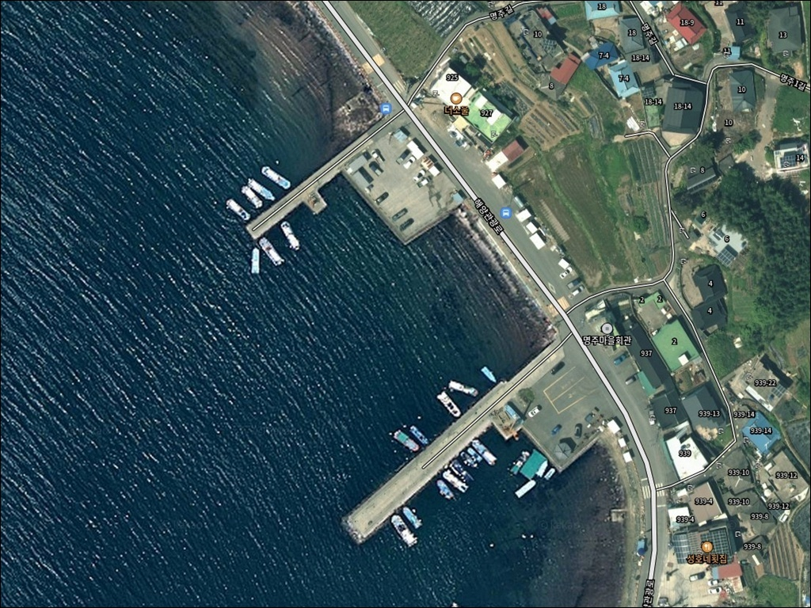
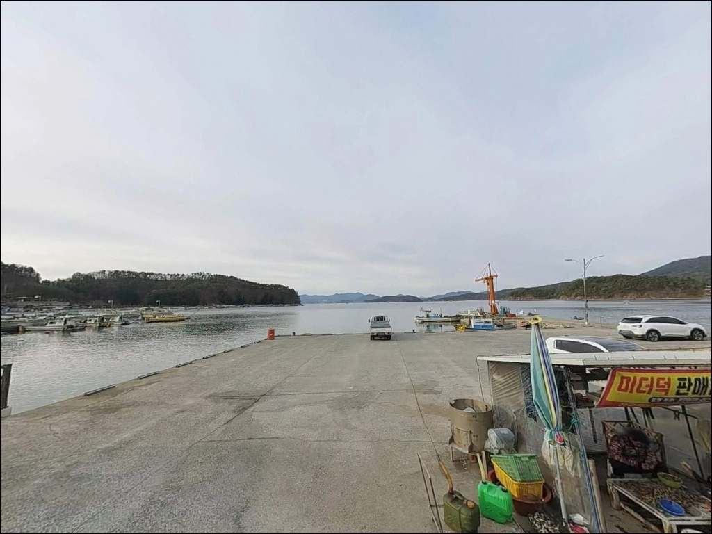
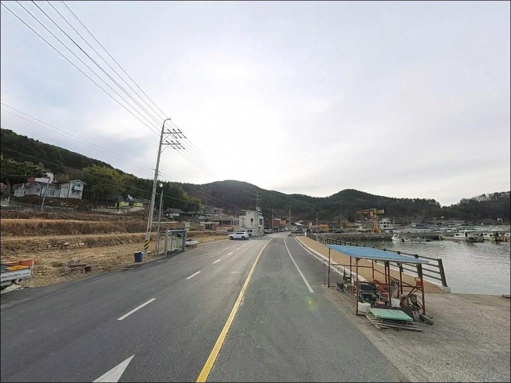
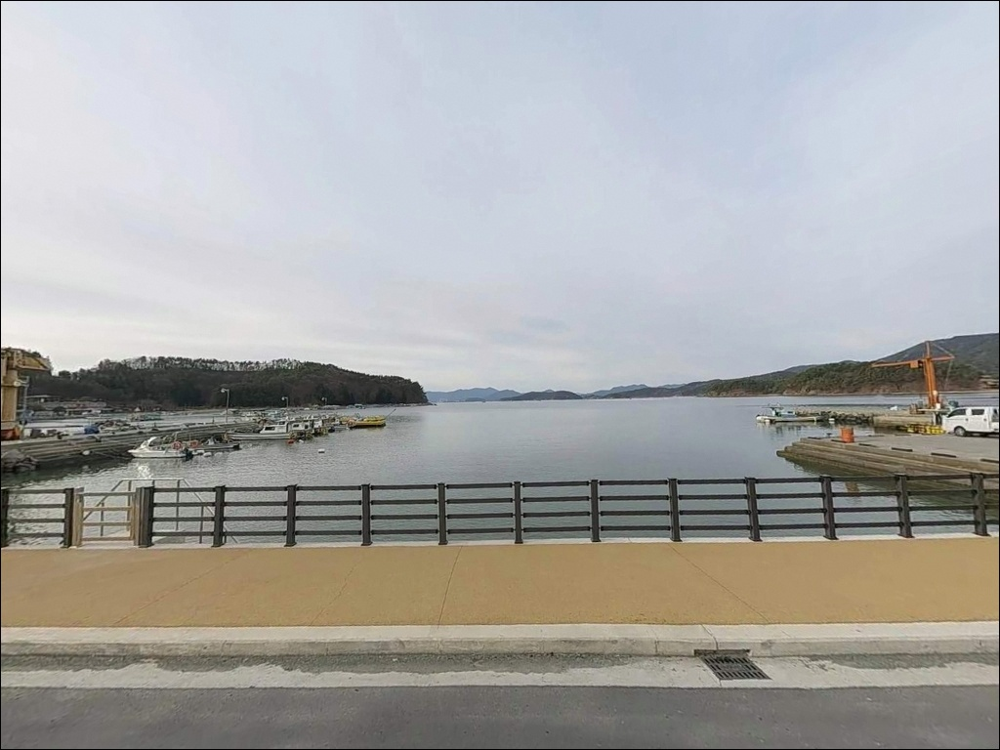
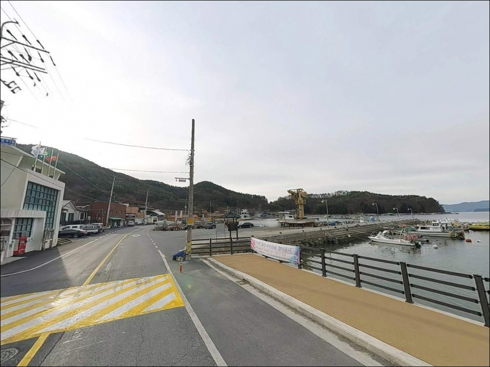
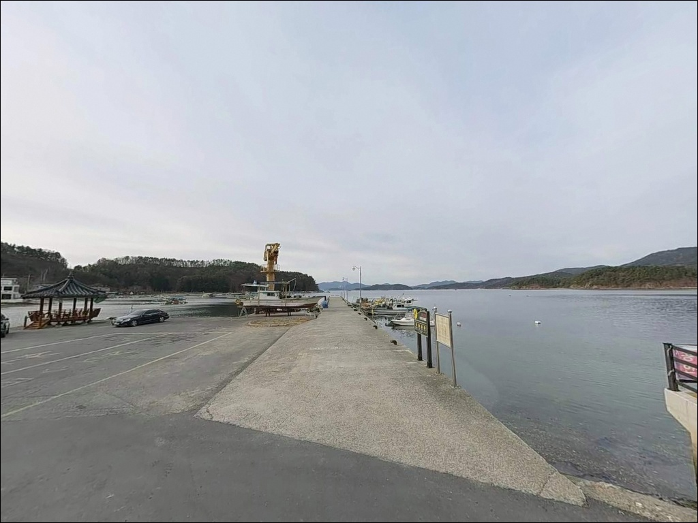
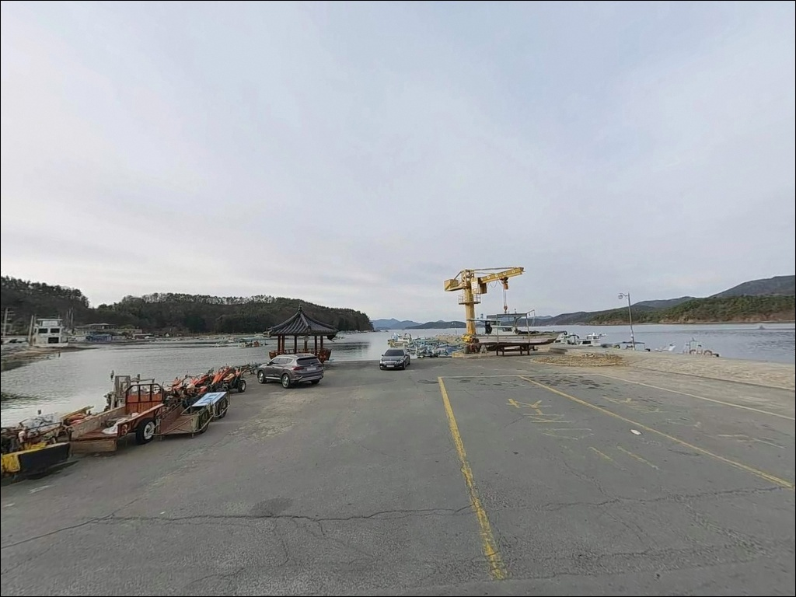
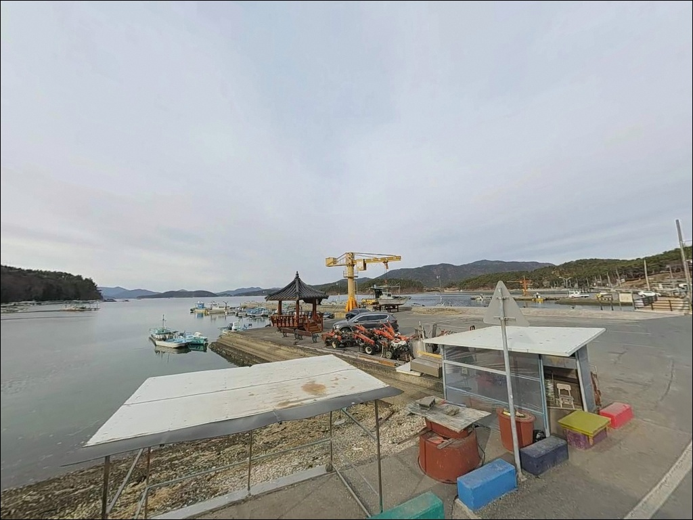
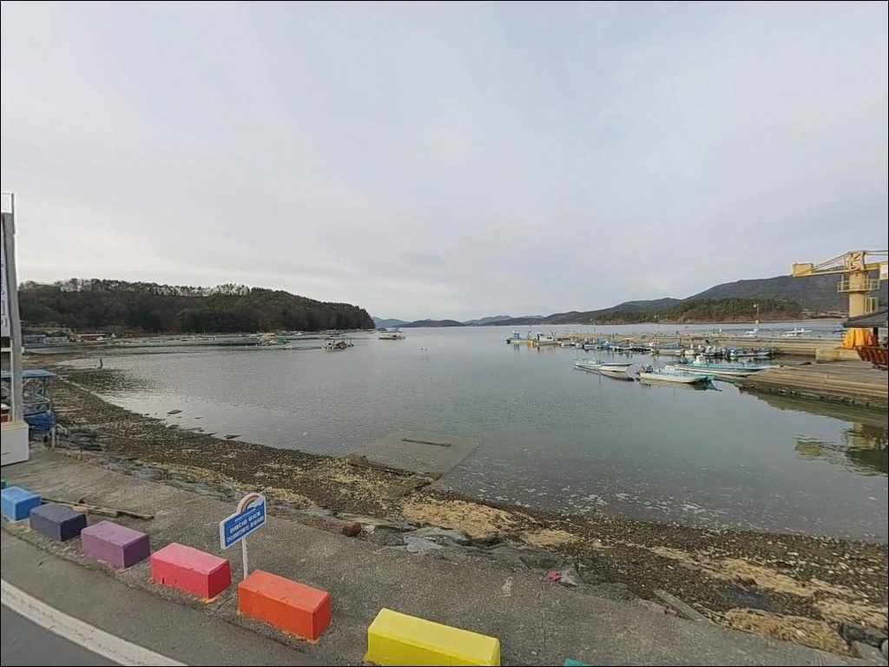

창원 명주항 방파제, 만조 때 수심 8m 끝단에서 살아난 야간 볼락 입질
이 페이지에는 광고(제휴 링크 포함)가 있으며, 광고 링크를 통해 구매하면 운영자가 판매 수익 또는 수수료를 받을 수 있습니다. 포인트 사진: 카카오맵 스카이뷰·로드뷰. 이 페이지의 지도·사진 이미지는 카카오맵의 실제 서비스 이미지와 다를 수 있습니다.


포인트 안내
명주항
경남 창원시 마산합포구 구산면 석곡리 813-6
명주항 외항 방파제 끝단 자리를
물때와 무관하게 잡으면,
들물이 거세게 돌아오는 시점에
채비 컨트롤이 어려워집니다.
구산면 내만권 특성상 들물과 날물의
수위 차가 선명하게 형성되어,
타이밍을 놓치면 방파제 자리 자체를 바꿔야 하는 상황이 됩니다.
이 글은 명주항의 진입 여건, 방파제 지형 구조,
차박 조건, 낚시 스타일별 공략 기준에 집중합니다.
조황 단정이나 특정 어종 보장은
이 글의 범위에 포함되지 않습니다.

1. 진입 동선과 포인트 접근성
명주항은 구산면 해안도로에서
명주마을 방향으로 진입하는 구조입니다.
진입로 전 구간이 2차선 포장도로로 연결되어 있어
대형 캠핑카도 진입에 큰 제약이 없습니다.
경사가 가파른 구간 없이 완만하게 이어지며,
초행이라도 해안도로를 따라가면
방파제까지 자연스럽게 닿을 수 있습니다.
주차는 방파제 시작 지점 옆 콘크리트 공터와
마을회관 인접 공간을 활용합니다.
공터가 넓어 대형 차량도 자유롭게 회차할 수 있는 구조입니다.
낚시 자리와 주차 공간이 가깝게 연결되어 있어
장비 이동이 편한 편입니다.

2. 차박 환경과 야간 체류 여건
명주항 방파제 입구 공터는
낚시 후 차박으로 이어지기 좋은 구조입니다.
한적한 어촌 마을 특성상 주말을 제외하면
야간 차량 통행이 적고,
파도 소음이 잔잔한 내만권 환경이라
수면에 방해가 되는 요소가 크지 않습니다.
민가와의 거리를 감안해 야간 소음 관리는
기본으로 지켜야 합니다.
항만 보안등이 설치되어 있어
완전한 암흑은 아니지만,
방파제 끝단은 조명이 미치지 않는 구간이 있어
개인 헤드랜턴은 반드시 챙겨야 합니다.
구명조끼도 야간 체류 시 필수입니다.
주말에는 낚시객 유입이 있어
단독 체류 느낌을 원한다면 평일 방문이 낫습니다.


3. 주변 편의시설 및 인프라 현황
명주항에서 차량으로 5~10분 거리인
구산면 수정리(심리 일대)에
편의시설이 집중되어 있습니다.
농협 하나로마트, 편의점, 식당, 전문낚시점이
반경 3km 이내에 모두 갖춰진 구조입니다.
GS25 심리점과 CU 마산원전점이
약 2.5~3km 거리에 위치합니다.
낚시 소품과 미끼는 왔다낚시점에서
08:30~21:00 시간대에 구매할 수 있습니다.
출발 전에 미끼까지 준비를 마치고 왔다면
현장에서 추가 이동 없이 낚시에 집중할 수 있습니다.
명주항 인근 마을 내부에는
편의점과 같은 시설이 없으니
소품·식수·얼음은 심리 일대에서 미리 보충하는 편이 좋습니다.

4. 진입 전 반드시 챙겨야 할 준비사항
명주항 방문 전 첫 번째로 확인할 것은 물때입니다.
들물과 날물의 수위 차가 선명한 구조라
입장 타이밍에 따라 방파제 끝단 수심 활용 범위가 달라집니다.
바다타임에서 구산면 기준 물때를 먼저 확인하고,
만조 전후 2~3시간 구간을
낚시 집중 타이밍으로 설정하는 것이 기본 전략입니다.
외항 테트라포드 구간은 발판이 불규칙합니다.
야간에 테트라포드 위에서 이동할 경우
미끄럼 방지 신발과 구명조끼는 선택이 아닙니다.
방파제 끝단과 갯바위 진입 시
헤드랜턴 외에 보조 조명도 함께 챙기는 것이
안전한 야간 낚시의 기본 조건입니다.
어선이 드나드는 어촌 선착장 구조이므로
어선 계류 공간과 어구 주변은
낚시 자리로 활용하지 않는 것이 기본 매너입니다.
쓰레기는 모두 수거해 철수하며,
야간 소음도 민가 인접을 감안해 관리합니다.

낚시 포인트 선정 전 반드시 확인해야 할 지형 요소
명주항은 북방파제와 남방파제로 나뉩니다.
주 낚시 포인트는 북방파제 외항 측으로,
중형 테트라포드가 배치된 구간과
내항 콘크리트 직벽 구간이 혼재합니다.
바닥은 뻘과 모래가 주를 이루지만
방파제 끝단과 테트라포드 경계면에
여밭과 인공어초가 형성되어 있습니다.
만조 기준 방파제 끝단 수심은 약 6~8m 수준입니다.
조류는 거세지 않아 예민한 채비 운용이 가능한 편이며,
정조보다 흐름이 살아날 때 반응이 나오는 구조입니다.
방파제 끝단 물골 방향으로 흘리거나
테트라포드 경계면을 천천히 탐색하는 방식이
이 포인트의 지형과 잘 맞습니다.
방파제 끝단은 조류 변화가 선명해
볼락 반응이 살아나는 자리입니다.
인근 해역은 미더덕·멍게 양식 시설이 산재한 구조로,
이 구조물 주변을 어군이 따라 이동하는 패턴을
이 해역 전반에서 기대해 볼 수 있습니다.
출조 전에 명주항 또는 구산면 방파제 일대 조황을
먼저 검색해 보시기 바랍니다.


6. 포인트에 어울리는 낚시 스타일
이 포인트에서 가장 성과가 안정적인 방식은
야간 볼락 루어낚시입니다.
겨울부터 초봄까지 내항 석축과
외항 테트라포드 경계면에서
볼락 입질이 활발한 편이며,
소형 지그헤드 채비로
방파제 주변 경계선을 천천히 탐색하는 방식이
이 지형 구조에 잘 맞습니다.
원투낚시도 이 포인트 구조에 어울립니다.
뻘과 모래 바닥 특성을 살려 봄철 도다리,
양태, 보리멸을 노릴 수 있고,
야간에는 갯지렁이 미끼에
붕장어 입질이 활발하게 올라오는 패턴을
기대해 볼 수 있는 구조입니다.
찌낚시는 가을철 감성돔과 숭어를 대상으로 합니다.
수심을 바닥권에 맞추고
테트라포드 끝단 물골 방향으로 흘리는 방식이
유효한 지형입니다.
호래기(소형 오징어류) 에깅도
겨울~초봄 야간에 방파제 가로등 주변을 중심으로
시도해 볼 만한 패턴입니다.
물때를 먼저 계산하고 진입하는 것이
명주항 야간 낚시의 기본 전략입니다.

7. 대안 포인트와 플랜 B 동선
명주항 자리가 차거나
조류 조건이 맞지 않는다면
원전방파제가 첫 번째 대안입니다.
차량으로 10분 거리인 구산면 심리에 위치하며,
구산면 최대 규모 방파제로
주차장·낚시점·편의시설이 모두 갖춰진
구산면의 중심 낚시 포인트입니다.
감성돔, 볼락, 갈치, 에깅 등
다양한 낚시 방식이 성립하는 구조이며
야간 낚시 여건도 안정적입니다.
심리방파제도 원전방파제 인근에 위치해
조류 흐름이 원활한 편이며,
인파가 몰릴 때 대안으로 쓰기 좋습니다.
석곡방파제도 명주항 인근의
대체 포인트로 활용할 수 있습니다.
구산면 해안을 따라 비슷한 수심 구조가 이어지므로
명주항과 조건이 다르지 않다면
동선 이동 부담이 적은 석곡방파제를
먼저 확인하는 방식이 효율적입니다.

야간 볼락과 원투를 함께 즐길 수 있는
구산면 소형 방파제 포인트
볼락 루어나 붕장어 원투낚시를 즐기는 낚시인이라면
명주항의 방파제 구조는 잘 맞는 편입니다.
수심 6~8m의 안정된 끝단 자리와
테트라포드·여밭이 혼재한 지형은
한 곳에서 여러 방식을 병행할 수 있는 조건입니다.
진입로와 주차 여건도 안정적이어서
장거리 출조의 부담 없이 들를 수 있는 포인트입니다.
다만 물때를 무시하고 들어가면
외항 자리에서 채비 컨트롤이 어려워질 수 있습니다.
물때 확인, 야간 조명 준비, 테트라포드 발판 주의,
이 세 가지를 챙기고 간다면
야간 낚시와 차박을 동시에 얻을 수 있는
구산면 해안의 조용한 포인트가 됩니다.
편의시설이 3km 권역 내에 갖춰져 있고
원전방파제라는 든든한 대안이 가까이 있어,
처음 구산면을 찾는 낚시인에게도
무리 없이 접근할 수 있는 포인트입니다.